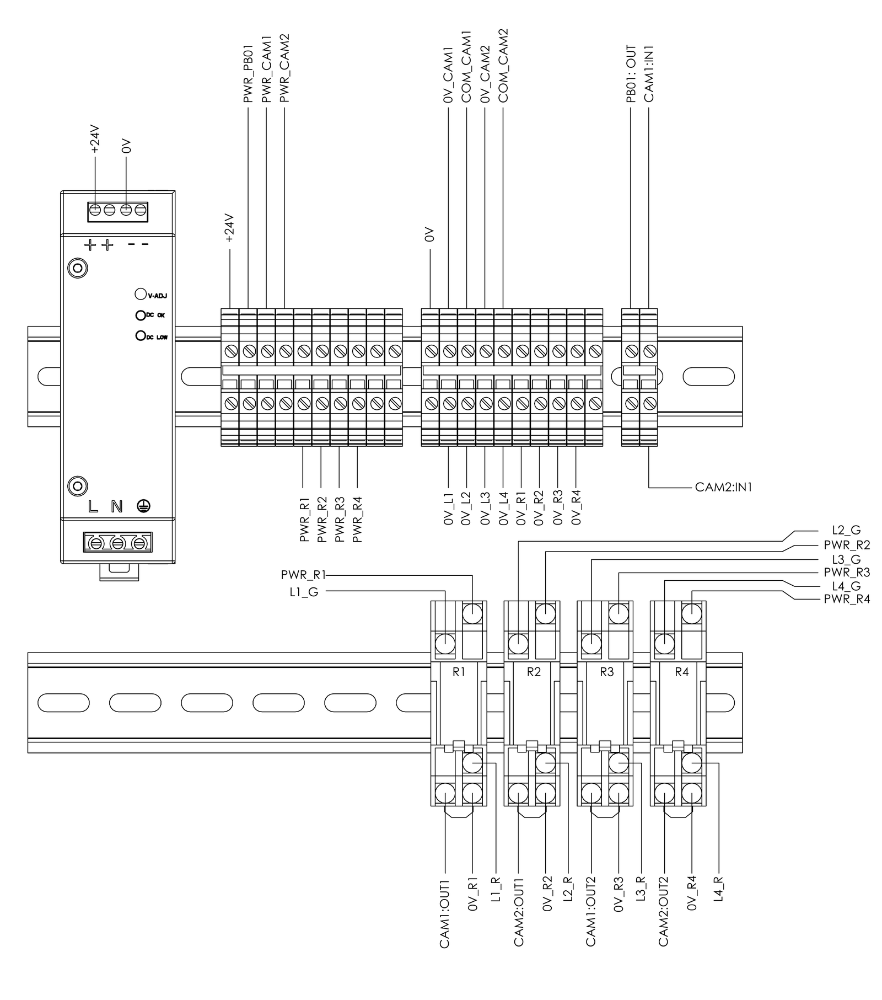

Modineer · May–Aug 2025 · Mechatronic design
Automated Vision Inspection System
Automated multi-feature part inspection using vision, proximity and laser sensors. Cycle time went from 83 s to 47 s.
RoleSolo, concept to floor
SensingVision, proximity, laser
Cycle time83 s → 47 s (−43%)
StatusDeployed in production
What I did
- Designed and built the whole system myself, from concept to the production floor.
- Designed the fixture, the control panel and the relay-based automation.
- Integrated the vision, proximity and laser sensors.
Under construction
Fixture render
